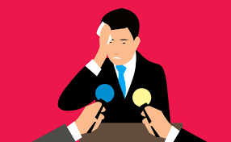
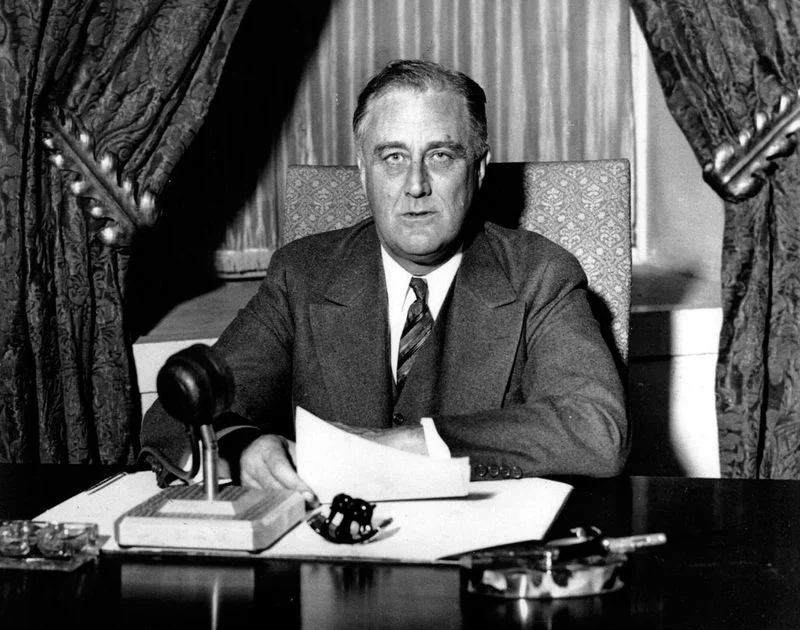

Evitar que el auditorio se duerma durante un discurso es un desafío común para los oradores, pero existen varias estrategias efectivas para mantener a la audiencia atenta y comprometida. Una de las técnicas más importantes es variar el ritmo y el tono de la voz, evitando una monotonía que puede inducir al aburrimiento. Además, hacer pausas estratégicas para enfatizar puntos clave o hacer preguntas puede captar la atención y mantener el interés. Utilizar anécdotas, humor o ejemplos relevantes también ayuda a humanizar el mensaje y conectar emocionalmente con la audiencia. El lenguaje corporal juega un papel crucial: moverse por el escenario, hacer contacto visual y usar gestos adecuados pueden mantener la atención y transmitir energía. Finalmente, involucrar a la audiencia a través de preguntas interactivas o dinámicas mantiene el ambiente activo y despierto.
El secreto de un triunfo
El éxito en la comunicación, especialmente en los discursos, depende de la pasión y convicción del orador. El relato comienza con Voltaire, quien destaca que el mundo no necesariamente necesita escuchar lo que queremos decir, pero si deseamos triunfar, debemos sentir una verdadera urgencia por compartir nuestro mensaje.
Un ejemplo destacado es Dwight Moody, quien, al preparar un sermón sobre la Gracia, estaba tan absorto en su tema que detuvo a un desconocido para preguntarle su opinión. Esa intensidad emocional le permitió conectar profundamente con sus audiencias.
Por otro lado, un alumno en París, pese a tener abundante información, no lograba interesar a su público porque carecía de pasión. Al cambiar su enfoque y hablar desde sus propias convicciones, logró captar la atención y recibir aplausos sinceros.
La preparación de un discurso no es solo técnica; implica extraer ideas propias desde lo más profundo del corazón y la mente. Como dijo Emerson: “Cualquiera sea el lenguaje que empleemos, nunca lograremos decir otra cosa que lo que somos.” Esto resalta la importancia del entusiasmo y la autenticidad como claves para lograr un verdadero impacto en quienes nos escuchan.
Un discurso de lincoln que ganó un pleito
Un día, una viuda de un veterano de la guerra de emancipación acudió al bufete de Abraham Lincoln en busca de ayuda. Un agente de pensiones le había cobrado injustamente 200 dólares por recuperar 400 que el gobierno le debía. Indignado por el abuso, Lincoln asumió el caso sin cobrarle nada.
Para prepararse, Lincoln no solo estudió los hechos legales, sino que encendió su pasión leyendo sobre la vida de George Washington y las dificultades de la guerra de emancipación. Durante el juicio, narró con fuerza las privaciones que sufrieron los patriotas: hambre, frío y sacrificios en busca de libertad.
Con la mirada encendida, Lincoln acusó al agente por su falta de humanidad, destacando el sufrimiento de la viuda. Hizo un llamado emocional al jurado, describiendo a la anciana como una mujer que en su juventud fue vibrante y ahora, en su vulnerabilidad, buscaba justicia. Su discurso conmovió tanto que algunos jurados lloraron.
El veredicto fue favorable, restituyendo todo el dinero a la viuda. Además, Lincoln cubrió los gastos del juicio, el hotel y el viaje de regreso de la mujer, sin cobrar honorarios. Su acción y discurso demostraron que un mensaje poderoso y auténtico no solo impacta, sino que también transforma realidades.

Comportarse con vehemencia
El entusiasmo y la vehemencia no solo son aspectos emocionales, sino también físicos y conductuales. Según William James, las acciones y los sentimientos están conectados: actuando con energía y confianza, generamos esos mismos sentimientos.
Para transmitir vehemencia, debemos proyectar control y serenidad. Adoptar una postura firme, evitar movimientos nerviosos y respirar profundamente son claves para sentir y transmitir poder. Al enfrentar al público, debemos mirar con seguridad y hablar con convicción, como maestros con un mensaje importante que compartir.
El uso de ademanes vigorosos es igualmente esencial. Estos no solo animan al público, sino que también revitalizan al orador, influyendo en su energía y tono. Incluso al hablar por radio, accionar físicamente mejora la vivacidad del discurso.
Finalmente, la proyección de la voz es fundamental. Muchos oradores no son escuchados claramente porque no aumentan el volumen ni intensifican su tono. Hablar en público requiere un volumen mayor al de una conversación habitual, como usar letras grandes para leer a distancia.
La clave para comportarse con vehemencia es practicar como si ya la tuviéramos. Como decía Shakespeare: “Pretendamos tener una virtud si no la tenemos.” Así, acción y sentimiento se alinean para proyectar confianza y entusiasmo genuino.F
Lo primero que hemos de hacer cuando el auditorio se duerme
Mantener al público despierto y atento requiere energía y pasión por parte del orador. Una respuesta humorística, como la del predicador que recomendó usar un arpón para pinchar al sacerdote, ilustra la importancia de mantener viva la energía en el escenario.
La clave es que el orador mismo debe estar lleno de vitalidad. Como lo demuestra la experiencia de actores y oradores famosos, prepararse físicamente con ejercicios vigorosos antes de hablar puede encender el entusiasmo. Desde golpes en el pecho hasta repetir el abecedario con intensidad, estas prácticas estimulan el cuerpo y la mente, ayudando a proyectar dinamismo.
Además, es fundamental cuidar la energía física. Un buen descanso, una ducha fría, masajes o incluso un baño en agua fresca antes de hablar pueden revitalizar al orador, ayudándolo a dar lo mejor de sí mismo. El desgaste físico que implica hablar en público puede ser tan exigente como realizar trabajo físico intenso.
Oradores como Daniel Webster, descrito como una "máquina de vapor con pantalones", y Beecher, que resaltaba la vitalidad como esencial para el éxito, ejemplifican cómo el poder explosivo de un discurso bien ejecutado puede capturar la atención del público y evitar que caiga en el letargo.
Cuando el auditorio se duerme, el primer paso es reavivar nuestra propia energía. Solo así podremos transmitir entusiasmo y mantener al público conectado.
Las 'palabras comadrejas' y las cebollas
Un discurso contundente requiere firmeza y claridad, pero evitando extremos. Las "palabras comadrejas", según Roosevelt, son frases vacías que debilitan el impacto del mensaje, como el indeciso "algo así como un sembrado de cebollas". Estas expresiones diluyen la fuerza del argumento, dejando al discurso vacío y carente de convicción.
El apocamiento y el tono pusilánime no inspiran confianza ni autoridad. Imaginemos una frase promocional como: "Veranee usted en San Sebastián. Dicen que es uno de los balnearios más pintorescos del mundo." La falta de firmeza hace que el mensaje pierda credibilidad. En cambio, la seguridad en el discurso puede influir poderosamente en los oyentes, como lo han demostrado líderes y textos religiosos. El Corán, por ejemplo, inicia afirmando con absoluta certeza: "No hay duda en este libro; es una guía."
No obstante, un exceso de afirmación puede alienar a ciertos públicos, especialmente aquellos con mayor capacidad crítica. Las personas pensantes prefieren argumentos bien fundamentados que les permitan formar sus propias conclusiones. En estos casos, es más eficaz plantear preguntas o presentar hechos en lugar de imponer certezas incuestionables.
El equilibrio es clave: la seguridad debe respaldarse con conocimiento y adaptarse al contexto. Así, el orador evita caer en la inseguridad de las "palabras comadrejas" sin parecer arrogante o dogmático.
Simpaticemos con el auditorio
Uno de los mayores errores que puede cometer un orador es desconectarse de su público. La historia de los oradores comerciales que fracasaron en Inglaterra es un claro ejemplo: no estaban genuinamente interesados en sus oyentes, y esa falta de empatía era evidente. Como resultado, no lograron establecer un vínculo, y su indiferencia fue correspondida con frialdad.
La conexión con el auditorio no surge de las palabras, sino de las emociones que las sostienen. Incluso un perro puede distinguir si nuestras palabras son sinceras. El gran Abraham Lincoln, uno de los oradores más queridos de la historia, basó su éxito no solo en su intelecto, sino en su profundo amor y empatía hacia las personas. Su corazón, descrito como "tan grande como sus largos brazos", le permitió transmitir mensajes que resonaban tanto en la mente como en el corazón de su audiencia.
Mme. Schumann-Heink, la célebre cantatriz, atribuía su éxito mundial a su amor genuino por el público. "Todos son mis amigos", decía, estableciendo un vínculo desde el primer momento que se ponía frente a ellos. Esta actitud, nacida de un espíritu generoso, era el secreto de su triunfo.
Hablar en público no es solo un acto mental o físico; es, en esencia, un acto espiritual. Los grandes oradores, como Daniel Webster, entendían que la conexión con el público va más allá de las palabras; requiere devoción, empatía y autenticidad.
Cultivemos esa actitud en nuestros discursos. Sintamos un verdadero interés por quienes nos escuchan, amemos nuestro mensaje y entreguémoslo con sinceridad. De esta forma, lograremos no solo comunicar, sino también inspirar.